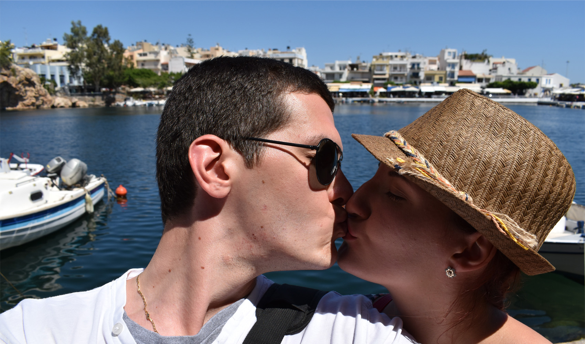
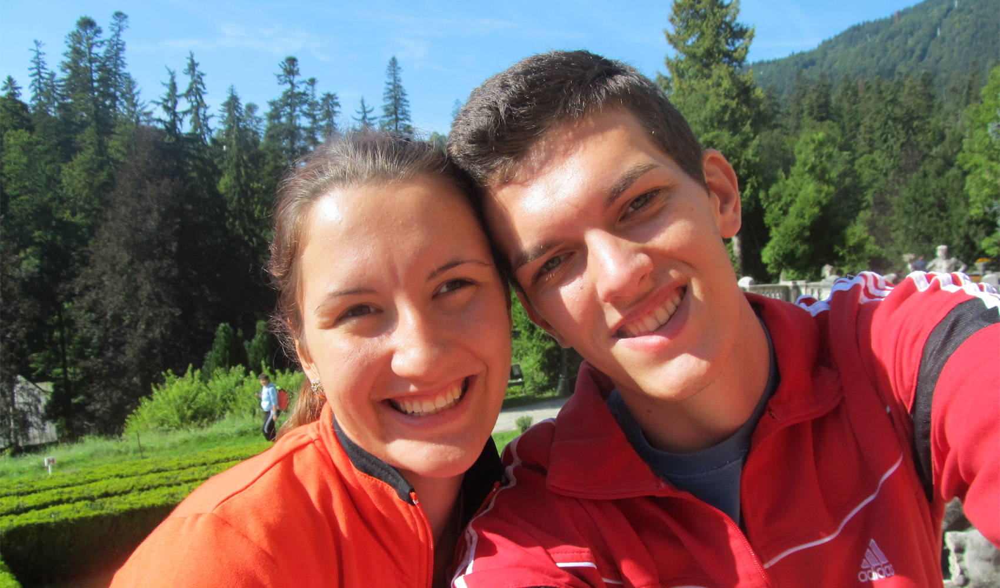
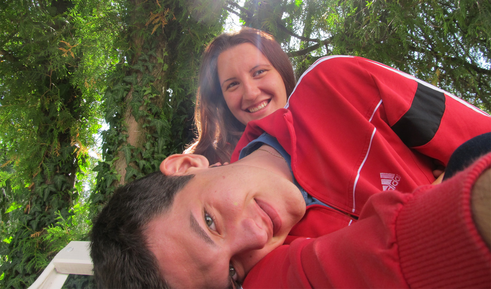
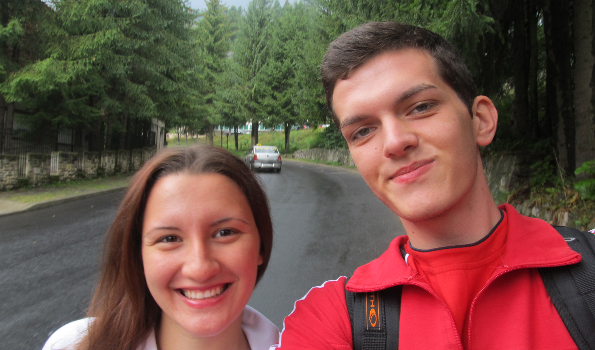
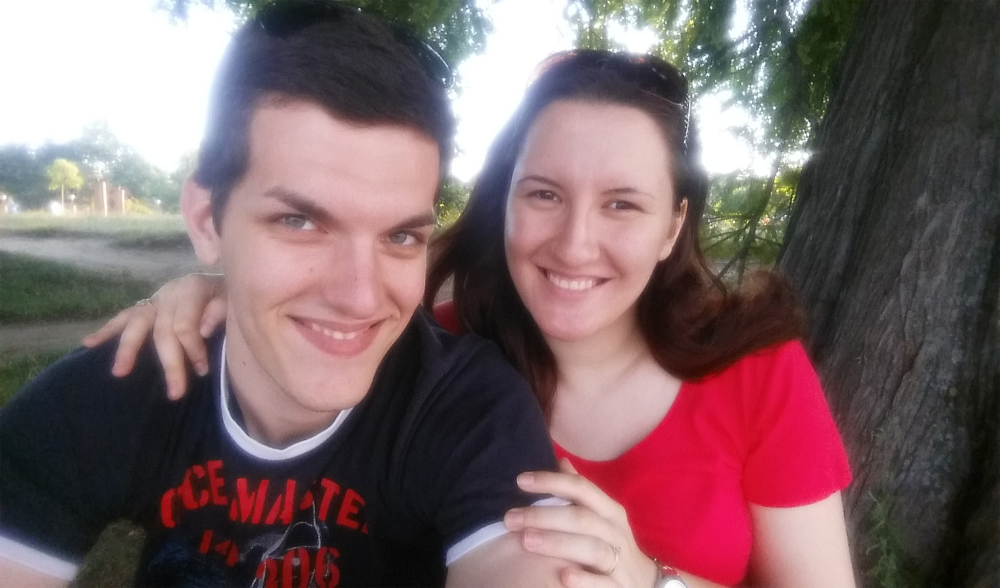
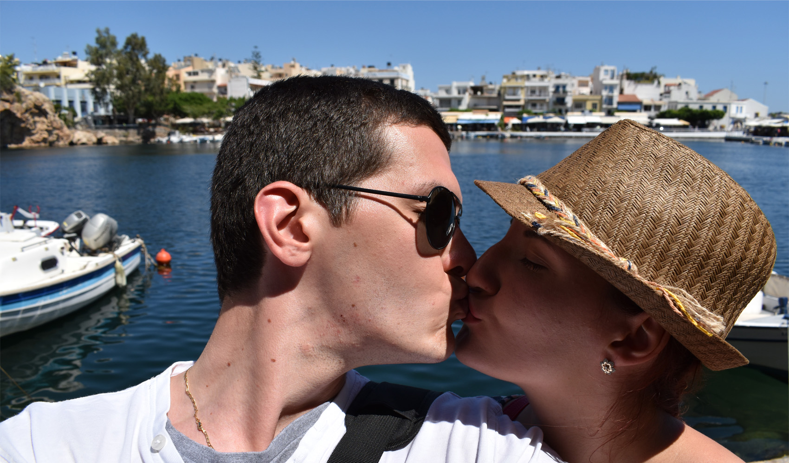
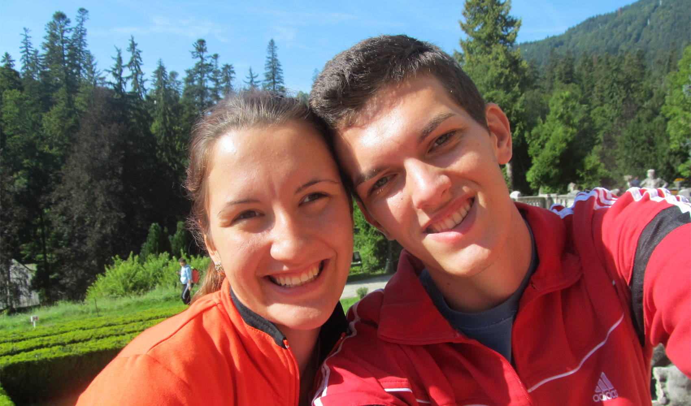
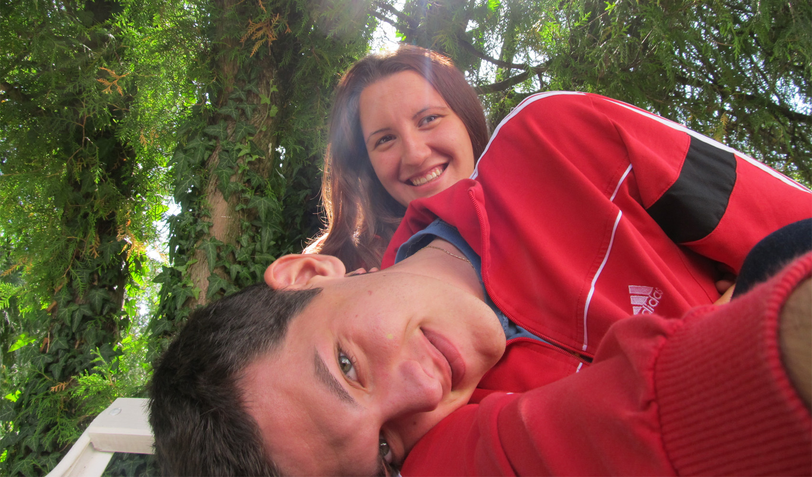
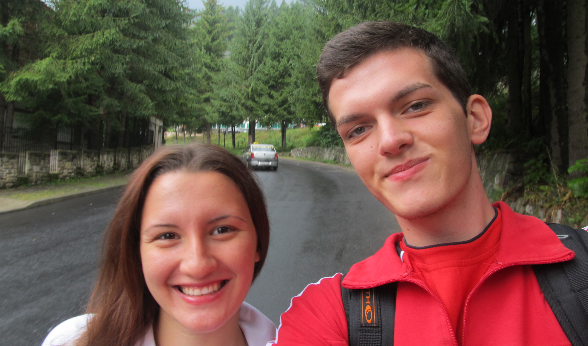
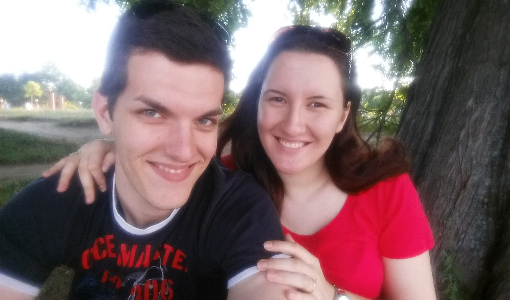

Numaratoarea inversa
Ani
Zile
Ore
Min
Sec
Scurta povestioara
Cerasela este o persoana foarte desteapta, draguta si prietenoasa care iubeste cartile de colorat, plimbarile lungi in natura, activitatile sportive si mancarea delicioasa. S-a nascut in Constanta, Romania in 1995 si l-a intalnit pe Vlad in 2006 cand amandoi aveau doar 11 ani. Ea studiaza in prezent Medicina Generala la Universitatea de Medicina Generala si Farmacie, Carol Davila, Bucuresti, Romania si viseaza sa ajunga un doctor de succes, care sa ajute oamenii si sa aiba grija de sanatatea si starea lor de bine.
Vlad este o persoana cu excelente abilitati de conducere, comunicare si negociere. S-a nascut in acelasi oras si an cu logodnica lui, unde amandoi au crescut si au copilarit impreuna, fiind chiar si colegi de scoala generala si liceu. Vlad studiaza pentru un certificat de Master in Stiinta in Inteligenta Artificiala si Programare in Sheffield, Regatul Unit al Marii Britanii. Dupa facultate el viseaza sa ajunga in industrie unde poate ajuta oamenii sa-si usureze munca de zi cu zi, oferindu-le solutii la diversele lor probleme tehnice.
Cererea in casatorie
Vlad a decis ca Cerasela ii este aleasa si jumatatea cu care vrea sa isi petreaca restul vietii la inceputul lui 2015 si a cerut-o in casatorie pe 1 Septembrie 2015 la 1400 de metrii altitudine, intr-o locatie montana superba - Cota 1400, Sinaia, Romania. Dupa doar 2 ani de frumoasa relatie, cei doi au realizat ca sunt facuti unul pentru celalalt si Cerasela a spus "Da" imediat intr-o insorita zi de toamna. Inca din acel moment se bucura de viata ca un cuplu logodit, care asteapta cu nerabdare ziua cea mare. Ei au fost deja in numeroase vacante impreuna atat in tara cat si in afara tarii, cateva dintre acestea fiind: Manchester, Liverpool, Hayling Island, Creta, Ranca, Sibiu, Durau, Busteni si lista poate continua. Au petrecut momente de vis impreuna si au decis sa-si lege destinele pentru totdeauna pe 5 Septembrie 2020.
Detalii
Inafara de ziua nuntii, care este acum batuta in piatra nu avem niciun detaliu despre ziua noastra speciala, dar urmariti acest website pentru mai multe informatii!
Contact
Ne puteti contacta la: +44 (0) 756 298 4151 & +40 (0) 735 022 344 & vlad_balanescu@yahoo.com